例1四种基本相互作用辨析 答案 D
判断关于引力、强相互作用、弱相互作用和“是否必须接触”的四个说法。关键选项D：四种基本相互作用都不以宏观接触为必要条件。
查看详细解析
- 引力存在于一切有质量物体间，不只限于天体或大质量物体。
- 原子核稳定主要靠强相互作用，但核子还可能参与电磁、弱相互作用，不能说“只有强相互作用”。
- “弱相互作用只发生在很小的物体之间”表述不严谨；它针对特定基本粒子过程。
- 基本相互作用可通过场或交换粒子表现，不要求物体表面接触。
所以选 D。
这一讲的主线不是背力的名称，而是建立一套可重复的判断程序：确定研究对象 → 找相互作用 → 判断力的方向与大小 → 用平衡或运动状态检验。教程完整覆盖课件照片中的四个模块，并把21道例题和13道思考题逐题提取、求解。
资料依据：主线与题目来自 lecture_6/5762.JPG–5774.JPG；概念表述参照本地人教版《物理 必修第一册》PDF 第三章第1–3节（PDF第62–73页，对应教材第57–68页）。每道题同时保留原照片中的装置图、受力图、坐标图或选项图，文字题干之后立即给出解答。
力是物体之间的相互作用。它既可能产生静力效果（使物体形变），也可能产生动力效果（使物体产生加速度，即速度大小或方向改变）。
任何力都有施力物体和受力物体；找不到施力物体的“惯性力”“运动力”通常是误画。
力既有大小又有方向，合成时遵循平行四边形法则，不能只比较数值。
相互作用总成对出现。A对B的力和B对A的力等大、反向、同性质，但作用在不同物体上。
一个物体可同时受多个力，每个力独立产生作用效果，总效果由矢量和决定。
| 相互作用 | 典型对象 | 作用范围 | 相对强弱 |
|---|---|---|---|
| 强相互作用 | 夸克、核子内部与核子之间 | 极短程，约核尺度 | 最强 |
| 电磁相互作用 | 带电粒子；宏观弹力、摩擦力的微观根源 | 长程 | 次强 |
| 弱相互作用 | β衰变等粒子过程 | 更短程 | 第三 |
| 引力相互作用 | 一切有质量的物体 | 长程 | 最弱，但宏观天体质量大而显著 |
常用强弱顺序：强相互作用 ＞ 电磁相互作用 ＞ 弱相互作用 ＞ 引力相互作用。
重力是万有引力在近地面问题中的常用近似。画图时，斜面是否倾斜都不会改变重力的竖直方向。
| 来源 | 必要条件 | 方向规则 |
|---|---|---|
| 面支持力/压力 | 接触且挤压 | 垂直接触面；曲面处沿公法线 |
| 轻绳张力 | 绳绷紧 | 沿绳并指向绳收缩方向；只能拉 |
| 弹簧弹力 | 弹簧伸长或压缩 | 沿弹簧轴线，阻碍形变 |
| 轻杆弹力 | 杆发生形变 | 可拉可推；一般不保证沿杆。只有二力直杆才能直接判为沿杆 |
x = |l − l0| 是相对原长的伸长量或压缩量，不是弹簧现长。劲度系数 k 越大，弹簧越“硬”。
条件：接触、挤压、接触面有摩擦、正在相对滑动。方向与受力物体相对接触面的运动方向相反。
fk = μN条件：接触、挤压、接触面有摩擦、有相对运动趋势但尚未滑动。大小是“为维持当前状态所需要的值”。
0 ≤ fs ≤ fs,max ≈ μsN每支箭头都能回答“谁对研究对象施力？”；同一相互作用不要在同一个受力图里画两次；速度、加速度、运动趋势不是力。
连续均匀物体可切成小质量元后取极限；组合图形常用“正质量相加、孔洞按负质量相减”。坐标原点可任选，但每个分块必须使用同一坐标系。
质心必在所有对称轴（面）上。先用对称性降维，再用坐标公式求剩下的一维坐标。
均匀半圆薄盘质心在对称轴上，距直径边中点 4R/(3π)。
判断关于引力、强相互作用、弱相互作用和“是否必须接触”的四个说法。关键选项D：四种基本相互作用都不以宏观接触为必要条件。
所以选 D。
从“所有物质间均有引力”“强作用只在宏观物体、弱作用只在原子核”“电与磁是电磁作用的不同表现”“原子核靠引力结合”中选正确项。
A正确；C正确。B把作用对象说反且过度绝对；D错误，核子的结合主要依靠强相互作用，绝非引力。
选择 A、C。
课件给出十个典型接触、绳、弹簧、球面和轻杆情形，要求只画物体A受到的弹力。
共同原则：先找接触点，再沿“垂直公切面、指向A”画面弹力；绳和弹簧沿自身轴线。
m₁放在劲度系数k₁的弹簧上，m₂由下方k₂支承。系统初静止，缓慢竖直提起m₁，直到m₁与上弹簧分离。求下弹簧对m₂的初、末作用力及m₂上移距离。
两根相同弹簧a、b和两个相同质量m的物体，在图甲中的总长度为l；改接成图乙，求新总长度。
图甲中两个物体都挂在弹簧b的下方，因此a、b都承受2mg，总伸长为 4mg/k。图乙中a承受A、B的总重2mg，b只承受B的重力mg，总伸长为 3mg/k。
两图弹簧原长总和相同，所以图乙比图甲短 mg/k。
l′ = l − mg/k，选B。
k₁＞k₂，ma＞mb。从四种串联排列中选总长度最小者。
上方弹簧承受两物体总重，下方弹簧只承受最下方物体。要让 ΣF/k 最小，应把较大载荷交给较硬的S₁，并让较轻的b处在最下方。
S₁在上、a居中、b在下，选A。
同一弹簧被压到长度l₁时弹力为F₁，被拉到长度l₂时弹力为F₂，求k。
设原长l₀：
F₁=k(l₀−l₁)， F₂=k(l₂−l₀)两式相加消去l₀：
k = (F₁+F₂)/(l₂−l₁)选C。
mA=m，mB=2m，mC=2m；滑轮由k₁弹簧悬挂，B与C由k₂弹簧相连。初态A、B等高且C着地，缓慢下拉A至C刚离地，求A、B高度差。
选D。
质量m的物块在质量M=3m的木板上滑动，板相对地面保持静止，物块与板间动摩擦因数μ。求地面对木板的摩擦力。
物块受到大小 μmg 的滑动摩擦；由第三定律，物块给板大小相等、方向相反的摩擦。木板静止，地面静摩擦必须平衡它。
大小为μmg，选A。质量M只影响地面对板的正压力和最大静摩擦能力，不改变所需平衡值。
A重50 N，B重60 N，动摩擦因数均为0.25；中间弹簧k=400 N/m、压缩2 cm。系统静止，再对B施加水平1 N力，判断摩擦力。
弹簧推力 Fs=kx=400×0.02=8 N。A需8 N静摩擦与弹簧平衡。B受到弹簧8 N和外力1 N同向作用，所以地面对B的静摩擦为9 N反向。
9 N小于可能的最大静摩擦能力，系统仍静止。
B所受摩擦力9 N，选C。
A重40 N，用绳固定在墙上；B重20 N。A-B与B-地面的动摩擦因数相同。以F=32 N匀速抽出B，求μ。
B同时克服两处滑动摩擦：
fAB=μ·40， f地=μ·(40+20)匀速时 32=40μ+60μ=100μ，所以 μ=0.32。
m=10 kg，μ=0.2，g=10 m/s²。物体初速度向右，同时持续受水平向右F=10 N。选择摩擦力随时间的图像。
滑动阶段摩擦大小 μmg=20 N，方向向左；合力向左10 N，所以物体减速至停。停下后，10 N外力不足以使其再次向右滑动，静摩擦自适应为10 N向左。
摩擦力由−20 N跃变为−10 N，选D。
质量均为m的黑、白毛巾按课件图多层交错，所有接触面的动摩擦因数均为μ。固定白毛巾，匀速抽出黑毛巾，求拉力F。
黑毛巾在四个相对滑动界面上受摩擦。按图中各层上方承载质量，四处摩擦的有效正压力贡献相加为 μmg(1+2+3+4)/2 的成对层计量；合并属于同一条黑毛巾的上下表面后，总阻力为：
F = μmg(1+2+3+4)/2 = 5μmg匀速时拉力等于总滑动摩擦力。
F=5μmg。
对传送带物体、被压在竖直墙上的物块、斜靠墙的杆/板、沿粗糙斜面上滑的物体分别画受力图。
弯曲杆固定在与水平成30°的斜面上，末端小球重2 N并静止。求杆对球的弹力。
球只受重力与杆的弹力。二力平衡要求两力等大、反向、共线，因此杆力必须是2 N竖直向上。弯杆端部弹力不能想当然地画成沿杆。
选D。
四个相同物块排成一列，被左右竖直木板用相等水平力夹住并静止。求各接触面的摩擦关系。
整体重4mg，左右墙面对称承担，故每侧墙摩擦均为2mg向上。再逐块隔离：
每本书重1 N，手在两侧能施加的最大正压力各30 N，手与书间μ=0.1。最多夹住几本书？
整摞书的外部竖直支持只来自左右手与最外书之间的摩擦。两侧最大总摩擦：
fmax,total=2μN=2×0.1×30=6 N每本重1 N，因此最多6本。书与书之间的摩擦是内力，不能增加整摞所受外部向上力。
A质量2m、B质量3m，在相同粗糙竖直板之间静止。判断A、B之间摩擦方向以及墙面摩擦大小。
左右条件对称，墙面总共托住5mg，因此每侧墙摩擦为2.5mg向上。A只重2mg，左墙给它2.5mg向上，多出的0.5mg需由A-B摩擦向下平衡；所以A给B的摩擦为0.5mg向上。
A对B的摩擦向上，选A；“墙面对A摩擦恰为2mg”不成立。
求质量均匀、半径R的半圆薄盘质心位置。
由对称性，质心位于垂直直径边的对称轴上。以直径边为x轴，对面积元积分：
yc = (∫y dA)/(½πR²) = 4R/(3π)质心距直径边中点4R/(3π)，朝圆弧方向。
课件同页还给出由四个等大正方形组成的阶梯形，坐标原点在左下角，求质心坐标。
四个方块质量相等，中心坐标分别为 (l/2,l/2)、(3l/2,l/2)、(3l/2,3l/2)、(5l/2,3l/2)。取算术平均：
xc=3l/2， yc=l均匀杆长4a、质量4m；在距左端a、2a、3a处分别固定质量m、2m、3m的小球。求系统质心距左端的位置。
杆本身质心在2a。系统总质量10m，力矩和：
xc=[4m·2a+m·a+2m·2a+3m·3a]/10m=11a/5边长a的均匀正方形薄板，沿水平中线PQ挖去半径a/4的圆孔；圆孔与右边相切。求剩余部分质心。
由上下对称性，质心仍在PQ上。以正方形中心为原点，圆孔中心在 x=a/4。把孔看成负质量：正方形面积a²，孔面积πa²/16。
xc=[0·a² − (a/4)(πa²/16)]/[a²−πa²/16] = −πa/[4(16−π)]负号说明在正方形中心左侧。若从P点量：
xP=a/2−πa/[4(16−π)]=a(32−3π)/[4(16−π)]相同测力计甲、乙各重0.1 N，忽略下端挂钩重；甲正挂、乙倒挂，乙下方挂0.2 N砝码。静止时两表示数？
甲的弹簧悬挂了整个乙和砝码，示数为 0.1+0.2=0.3 N。乙倒挂后，其弹簧不仅承受砝码，还承受乙自身除无重挂钩外的0.1 N，所以示数也为0.3 N。
甲、乙均为0.3 N，选C。
a、b两条直线的横轴为弹簧总长度l；a的零力截距l₁小于b的l₂，且a更陡。比较原长、劲度系数及同力伸长量。
F=0时横坐标就是原长，所以a原长更短。图线斜率是k，所以ka＞kb。同样拉力下 x=F/k，b伸长更大。
选C。
判断手机与纸一起运动、或纸从手机下滑动时摩擦方向与大小是否随速度、拉力改变。
比较匀速上爬与匀速下滑时运动员所受摩擦力。
两种情况加速度都为0，竖直方向仅重力和竹竿摩擦平衡。因此摩擦都竖直向上，大小均为mg。摩擦阻碍的是相对滑动，不是对地运动。
A由水平测力计连到墙，B在其下被匀速抽动。判断A-B摩擦大小与测力计示数、B速度、拉力的关系。
A静止，水平方向受测力计拉力T和B给它的滑动摩擦，二力平衡，所以 f=T。理想滑动摩擦与相对速度及抽板外力大小无关。
选A。
编号1、2、3的相同棋子竖直叠放，3号左端与地面O点重合；各接触面的动摩擦因数相同，且最大静摩擦力等于滑动摩擦力。沿水平方向迅速向右击出2号，判断1号和3号的位置。
3号左端仍在O点，1号相对3号右移，对应图D。
比较笔尖位移、路程、两次经过a点的速度和摩擦方向。
起点和终点相同，位移为0；轨迹有长度，路程不为0。两次经过a的运动方向可不同，故速度和滑动摩擦方向也不保证相同。
选A。
搓纸轮驱动最上方第1张纸向右，底部有摩擦片防止多张进纸。判断各接触面的摩擦方向与性质。
轮对1号纸的摩擦向右；1号相对2号向右滑，二者间为滑动摩擦，不是静摩擦；底部摩擦片应对最下纸施加向左摩擦，阻止其跟随。
选D。
飞船先加速、后沿同一直线匀速；喷气推力与喷出气体方向相反。判断匀速阶段喷气方向。
匀速直线运动时合力为0。忽略其他力，推力必须竖直向上平衡重力，因此气体竖直向下喷出。
选C。推力方向不必与飞船速度方向相同。
把接触处局部切面近似为MN，判断b受到a的弹力方向。
接触弹力沿公法线，即垂直局部切面MN并从a指向b。根据课件图对应箭头，选D。
飞机速度指向左上，升力垂直速度，阻力反向于速度，推力沿速度，重力竖直向下。选正确受力图。
推力左上；阻力右下；升力与速度垂直并指向右上；重力竖直向下。四个方向同时满足的是B。
均匀烧杯开始为空，缓慢加入水，讨论“杯+水”系统重心高度。
刚加水时，新增质量位于空杯重心下方，把系统重心向下拉；水位继续升高后，新增水层逐渐高于当前系统重心，整体重心转而上升。
先降低后升高，选D。
两个形状相似的楔块A在上、B在下，整体靠竖直墙，B受竖直向上的F并静止。问A共受几个力。
选B。
下表用于确认课件中每一道编号题都已进入本教程。例19所在页同时出现“半圆薄盘通式”和“阶梯形方块”两问，因此按19A、19B均予保留，但总编号仍按课件记作21道例题。
| 课件页 | 已提取内容 | 数量 |
|---|---|---|
| 5765.JPG | 例1–3：基本相互作用、弹力图 | 3 |
| 5766.JPG | 例4–7：双弹簧、排列、胡克定律 | 4 |
| 5767.JPG | 例8–11：可动滑轮、叠块摩擦、抽板 | 4 |
| 5768.JPG | 例12–13：摩擦图像、交错毛巾 | 2 |
| 5769.JPG | 例14–17：受力图、弯杆、夹块与夹书 | 4 |
| 5770.JPG | 例18–19：夹块摩擦、质心 | 2 |
| 5771.JPG | 例20–21；思考1–2 | 4 |
| 5772.JPG | 思考3–6 | 4 |
| 5773.JPG | 思考7–10 | 4 |
| 5774.JPG | 思考11–13 | 3 |
| 合计：例题21 + 思考题13 | 34 | |
第一遍只看题干并在纸上画受力图；第二遍打开解析对照“研究对象—力的来源—方向—方程”；第三遍只看答案键，口头复述为什么其他选项错误。例3、14、16、18和思考13尤其适合反复画图。
点击任一缩略图可查看原始分辨率照片。上面的逐题图形摘录均从这些原图直接裁取，没有重绘或改变选项。
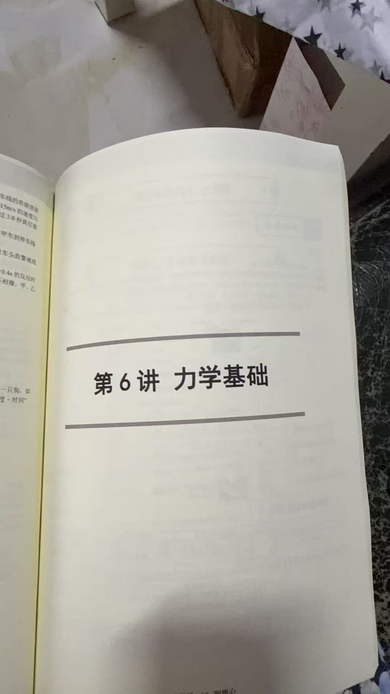
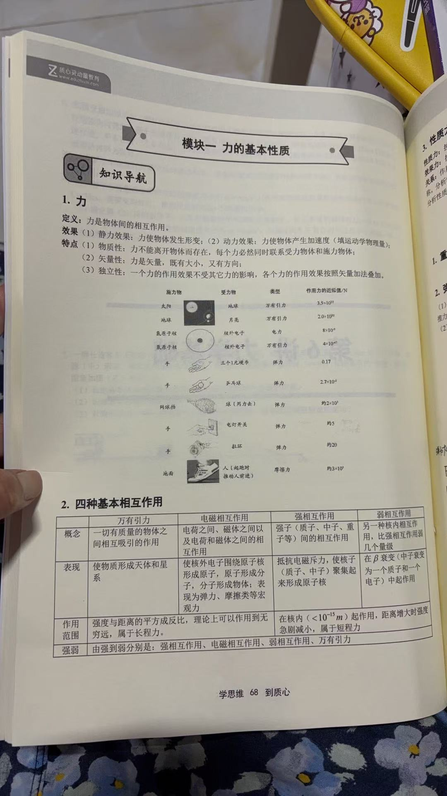
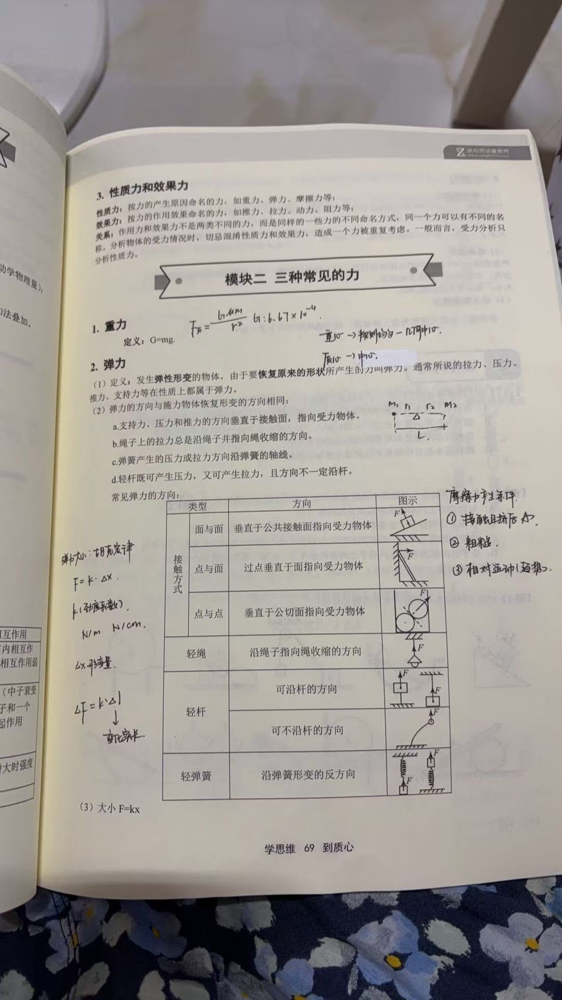
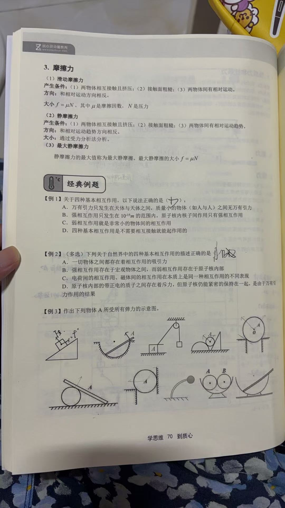
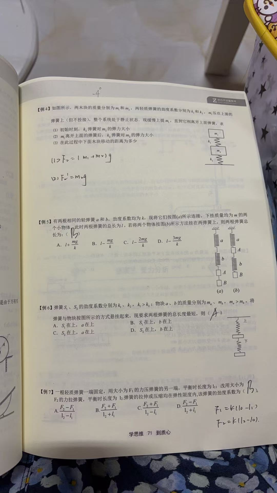
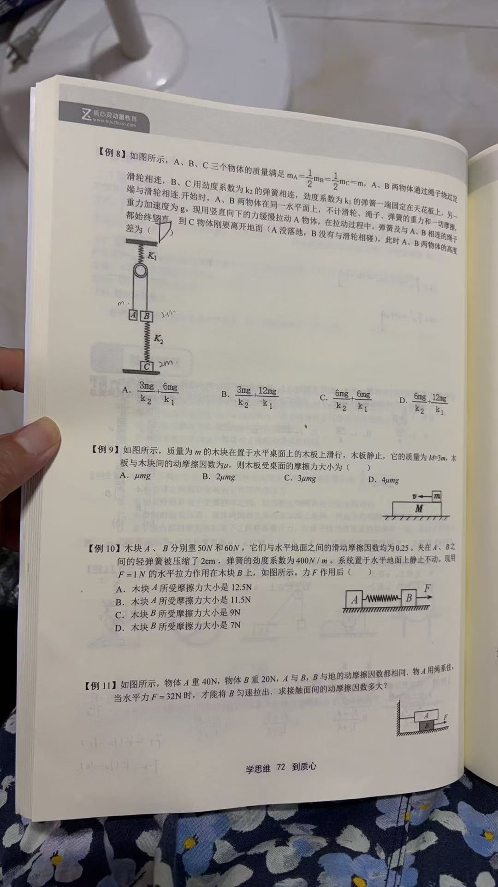
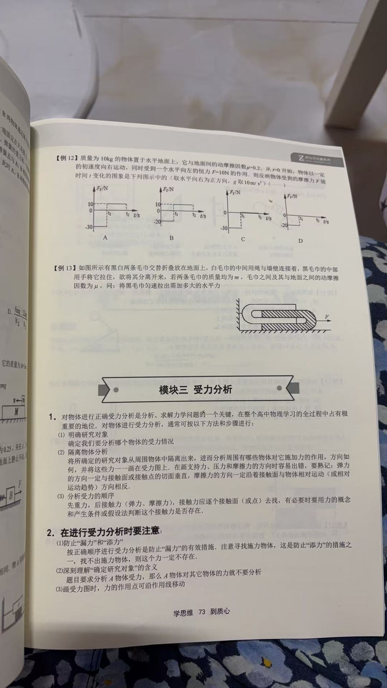
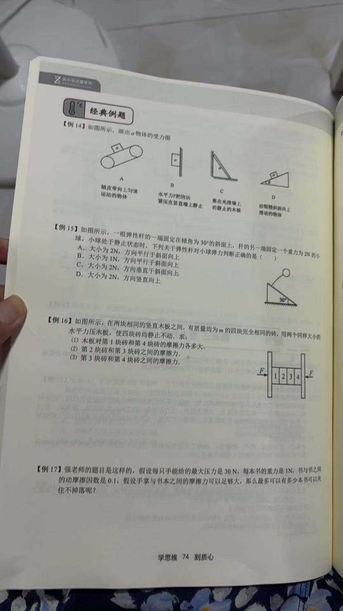
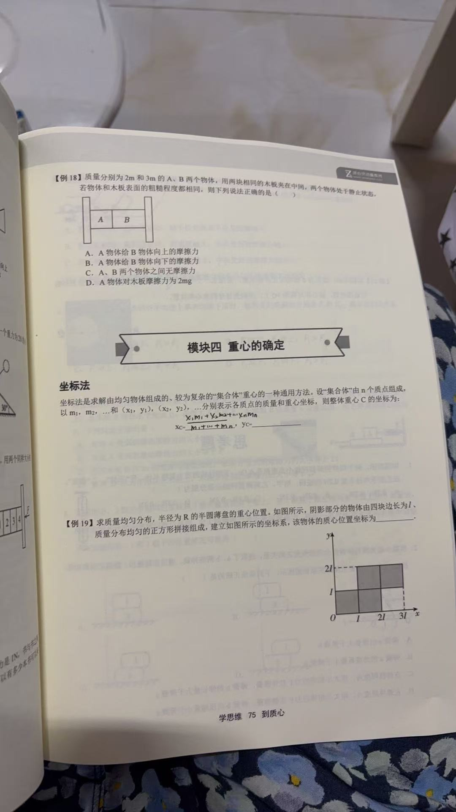
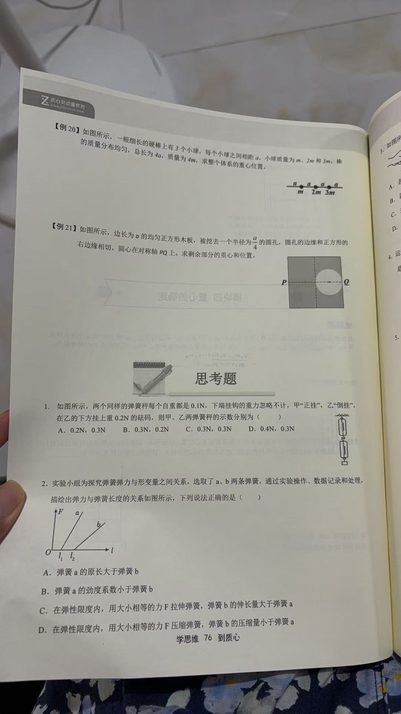
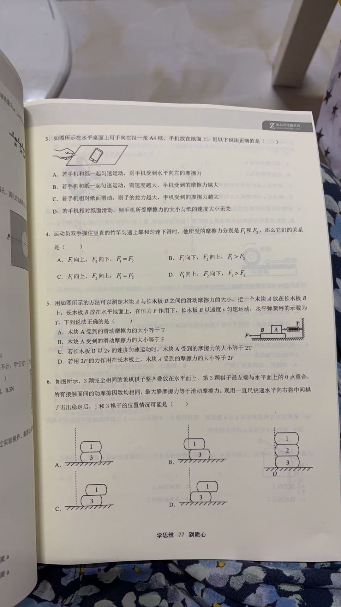
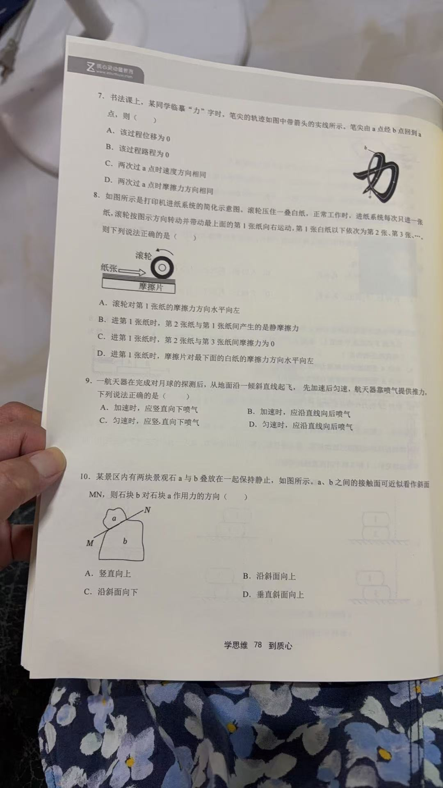
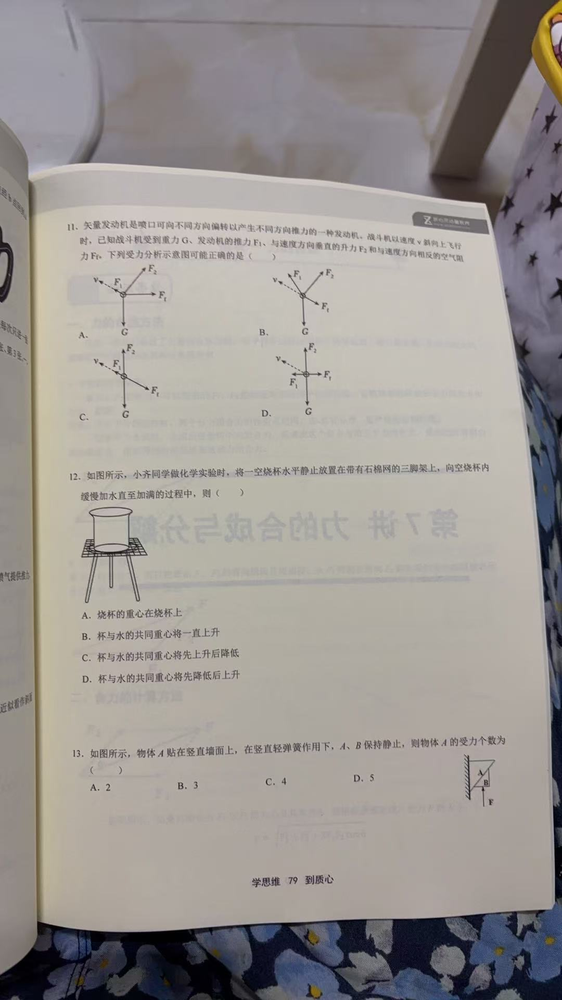
{kind=link}
{kind=link}
{kind=link}
{kind=link}
{kind=link}
{kind=link}
{kind=link}
{kind=link}
{kind=link}
{kind=link}
{kind=link}
{kind=link}
{kind=link}